Master how to compare discrete categories, rank products, display exact values, structure grouped comparisons, build stacked decompositions, and maintain visual integrity with zero-baseline charts.
Bar charts discrete categories ke beech values compare karne ka world-standard tool hain. Iska mental model ek Classroom Scoreboard ki tarah hota hai, jahan har student ya subject ka alag pillar khada hota hai.
Aao college semester ke 5 key subjects ke exam marks ko vertical bars ke sath compare karein:
import matplotlib.pyplot as plt subjects = ['Python', 'Maths', 'DBMS', 'Networks', 'Statistics'] marks = [88, 76, 91, 82, 85] fig, ax = plt.subplots(figsize=(8.5, 4.8), dpi=150) bars = ax.bar(subjects, marks, color='#0284c7', width=0.55, edgecolor='#0369a1', linewidth=1.5) ax.set_title('College Subject Exam Marks Comparison', fontsize=13, fontweight='bold') ax.set_xlabel('Curriculum Subject', fontsize=11, fontweight='bold') ax.set_ylabel('Marks (out of 100)', fontsize=11, fontweight='bold') ax.set_ylim(0, 105) ax.grid(axis='y', linestyle='--', alpha=0.5) ax.bar_label(bars, fmt='%d', padding=3, fontweight='bold', color='#0369a1') fig.tight_layout() plt.show()
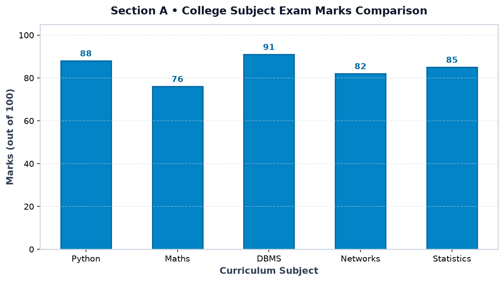
Online store ke 5 categories ke units sold ko compare karna:
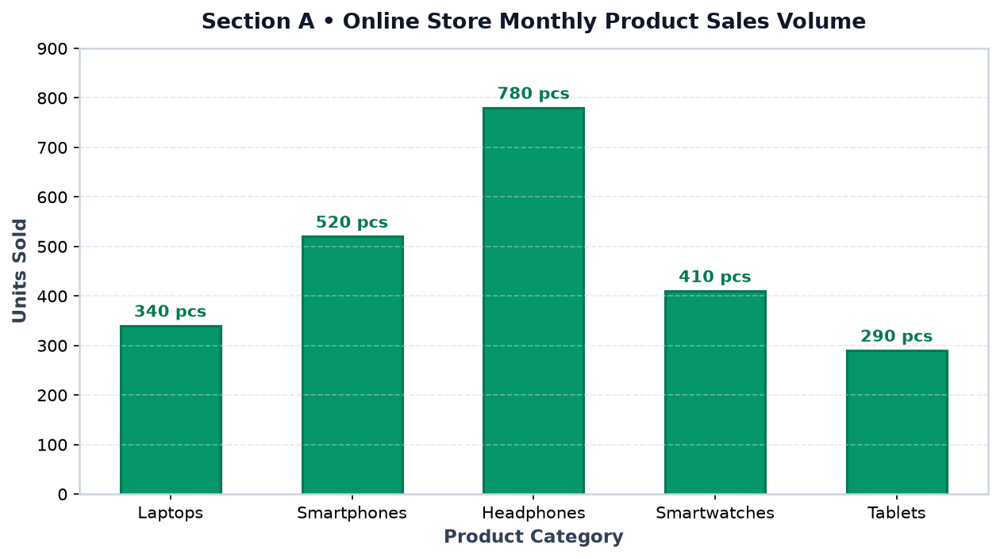
plt.bar() vs ax.bar()Vertical bar charts columns ki tarah draw hote hain jahan X-axis par categories hoti hain aur Y-axis par numeric values.
import matplotlib.pyplot as plt subjects = ['Python', 'Maths', 'DBMS', 'CN', 'Statistics'] marks = [88, 76, 91, 82, 85] plt.figure(figsize=(8, 5)) plt.bar(subjects, marks, color='#0284c7') plt.title('My Subject-Wise Marks') plt.xlabel('Subjects') plt.ylabel('Marks') plt.grid(axis='y', alpha=0.3) plt.tight_layout() plt.show()
Enterprise applications aur multi-panel dashboards mein ax.bar() use kiya jata hai:
import matplotlib.pyplot as plt months = ['Jan', 'Feb', 'Mar', 'Apr', 'May', 'Jun'] savings = [2400, 3100, 1900, 3500, 4200, 4800] fig, ax = plt.subplots(figsize=(8.5, 4.8), dpi=150) bars = ax.bar(months, savings, color='#7c3aed', width=0.5, edgecolor='#5b21b6', linewidth=1.5) ax.set_title('Student Monthly Savings Tracker (ax.bar)', fontsize=13, fontweight='bold') ax.set_xlabel('Month', fontsize=11, fontweight='bold') ax.set_ylabel('Saved Amount (Rs.)', fontsize=11, fontweight='bold') ax.set_ylim(0, 5500) ax.grid(axis='y', linestyle='--', alpha=0.5) ax.bar_label(bars, fmt='Rs.%d', padding=3, fontweight='bold', color='#5b21b6') fig.tight_layout() plt.show()
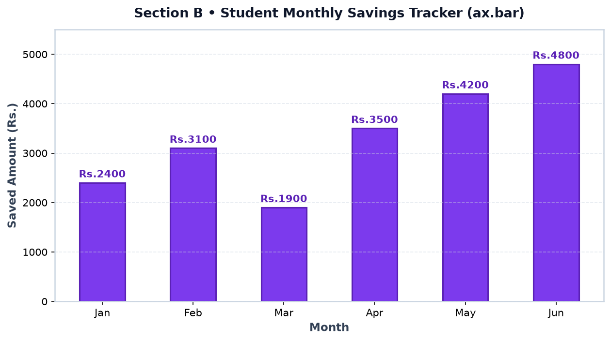
ax.bar(). June recorded peak savings of Rs.4,800.plt.barh() & ax.barh()Jab category ke names lambe hon (e.g. "Electronics Accessories", "Communication Skills"), toh vertical chart mein labels overlap hone lagte hain ya unhe awkwardly rotate karna padta hai. Horizontal Bar Charts category names ko Y-axis par naturally left-to-right readable format mein rakhte hain!
ax.invert_yaxis()ax.invert_yaxis() call kar do!
Technical skill ratings ko horizontal bars aur inverted Y-axis ke sath render karna:
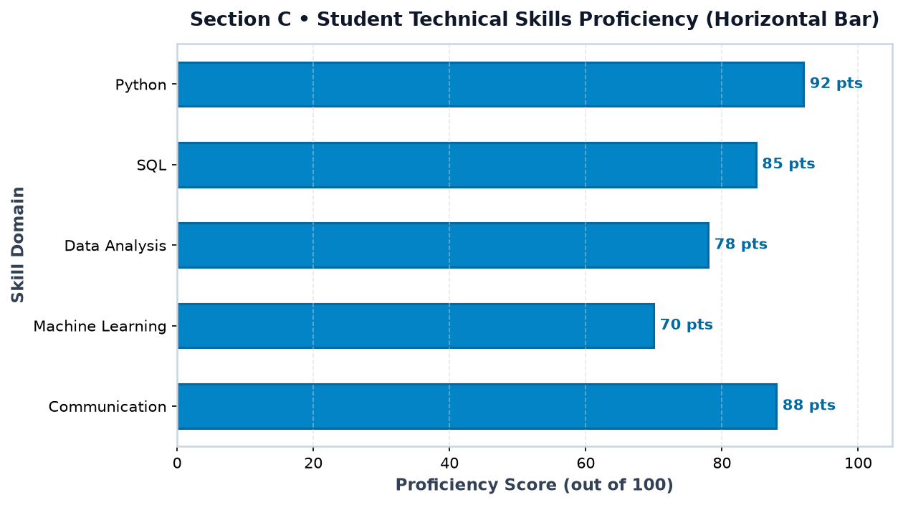
ax.invert_yaxis().15–25 characters lambe category names bina kisi rotation ya text-clipping ke clean render hote hain:
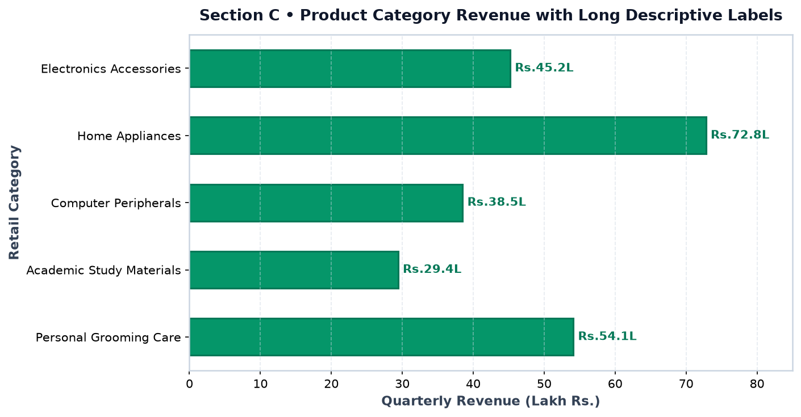
Dono orientations powerful hain, lekin unka selection data ki nature aur layout par depend karta hai:
| Criteria | Vertical Bars (plt.bar) |
Horizontal Bars (plt.barh) |
|---|---|---|
| Category Label Length | Short (2–8 characters, e.g. Mon, Tue, Jan, CN) | Long (10–35 characters, e.g. Machine Learning) |
| Number of Categories | Best for 3 to 8 categories | Can easily accommodate 8 to 20+ categories |
| Natural Orientation | Scoreboards, test marks, quarterly financial blocks | Ranked leaderboards, surveys, top-selling items |
| Grid Axis | ax.grid(axis='y') | ax.grid(axis='x') |
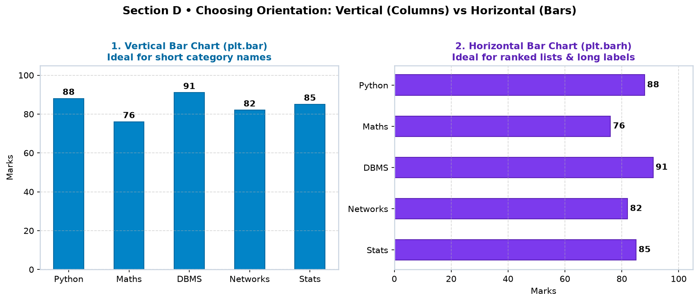
Bars ko aesthetically pleasing aur professional banane ke core styling arguments:
color: Single hex string (e.g. '#0284c7') ya list of colors.width: Vertical bars ki physical thickness (standard default: 0.5 to 0.6).height: Horizontal bars ki thickness (standard default: 0.5 to 0.6).edgecolor & linewidth: Outer border boundary color aur line width (e.g. edgecolor='#0369a1', linewidth=1.5).alpha: Bar fill transparency (0.0 to 1.0).Consistent blue theme ke sath crisp dark outer borders apply karna:
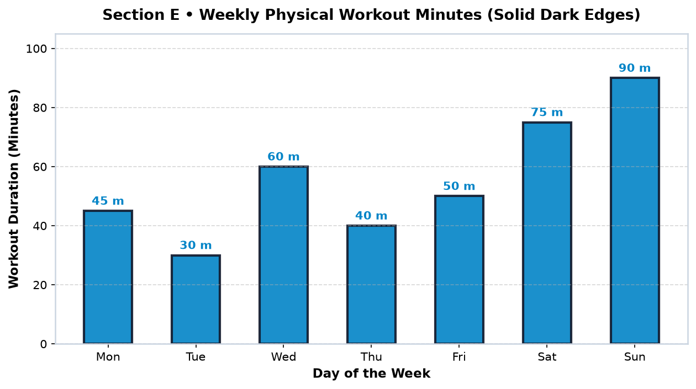
Summer season AC load ke dauran unit consumption surge ko visually emphasize karna:
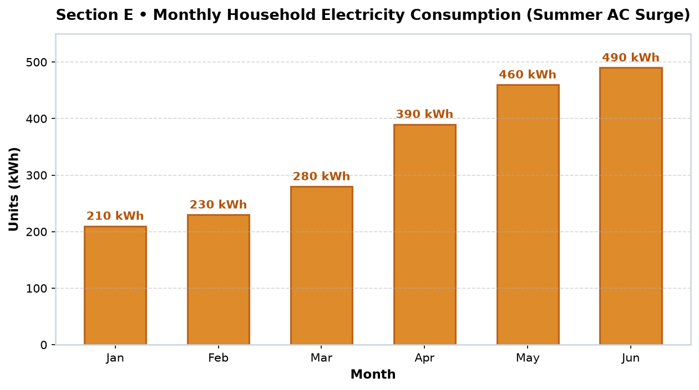
ax.bar_label()Pehle Matplotlib mein bar values add karne ke liye tedious for loops likhne padte the. Modern Matplotlib (3.4+) mein ax.bar_label() ek single command se saari bars par values perfectly align kar deta hai!
import matplotlib.pyplot as plt assessments = ['Midterm 1', 'Assignment 1', 'Midterm 2', 'Assignment 2', 'Final Exam'] scores = [78.5, 92.0, 84.0, 95.5, 88.0] fig, ax = plt.subplots(figsize=(8.5, 4.8), dpi=150) # bar() returns a BarContainer object container = ax.bar(assessments, scores, color='#0284c7', width=0.5, edgecolor='#0369a1') # Single line to label all bars with 1 decimal formatting and padding ax.bar_label(container, fmt='%.1f%%', padding=3, fontweight='bold', color='#0369a1') ax.set_title('Semester Assessment Scores with Direct Value Labels', fontsize=13, fontweight='bold') ax.set_ylabel('Score (%)', fontsize=11, fontweight='bold') ax.set_ylim(0, 110) ax.grid(axis='y', linestyle='--', alpha=0.5) fig.tight_layout() plt.show()
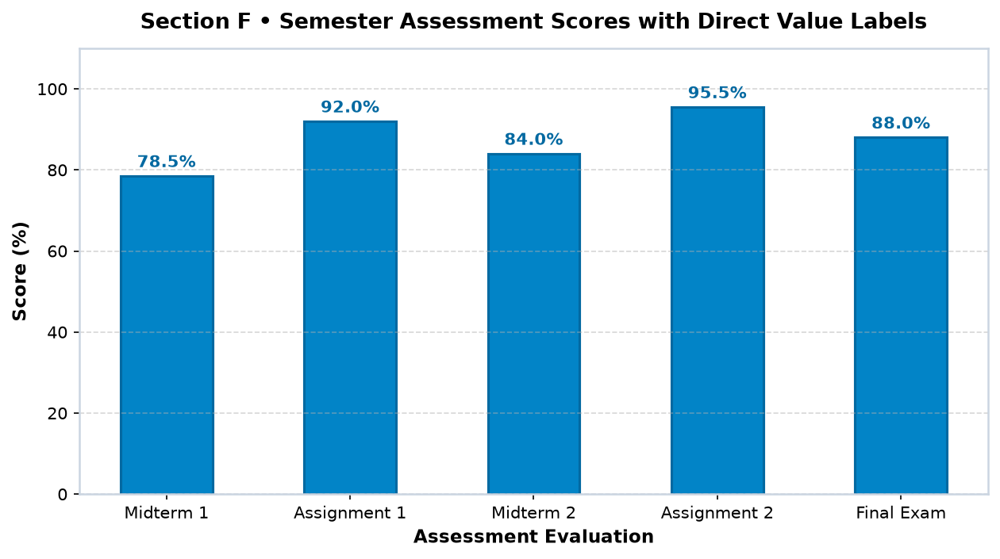
ax.bar_label(container, fmt='%.1f%%'), eliminating guessing from axis grids.Horizontal bars par labels bars ke right end par automatic space-padding ke sath place hote hain:
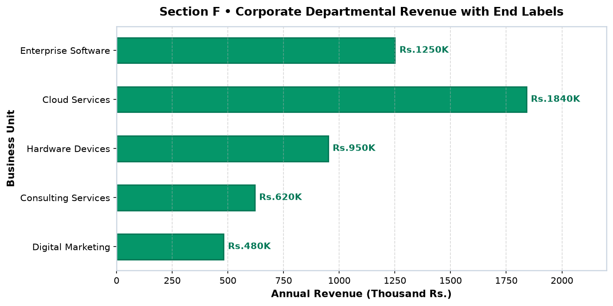
fmt='Rs.%dK').Unsorted bar chart random lagta hai. Jab categories sorted hoti hain, toh viewer instantly Top Performer (#1) aur Bottom Bottleneck identify kar leta hai.
values.sort() mat karo! Agar values sort ho gayi aur categories array alag reh gaya, toh galat product ko galat sales assign ho jayegi. Hamesha dono ko sath sort karo via sorted(zip(values, categories))!
Horizontal chart mein descending sort karke sabse popular product ko #1 spot par display karna:
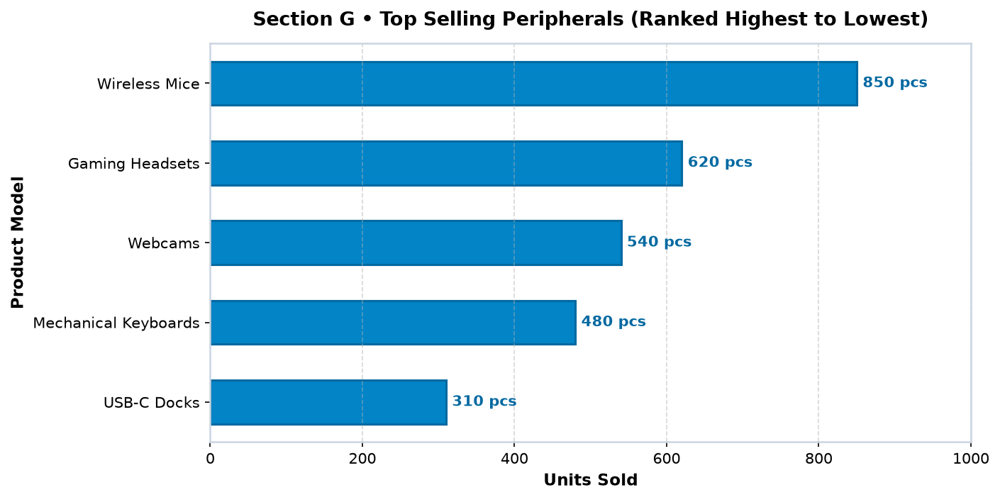
Vertical chart mein ascending progression dekhna taaki weak areas immediately identify hon:
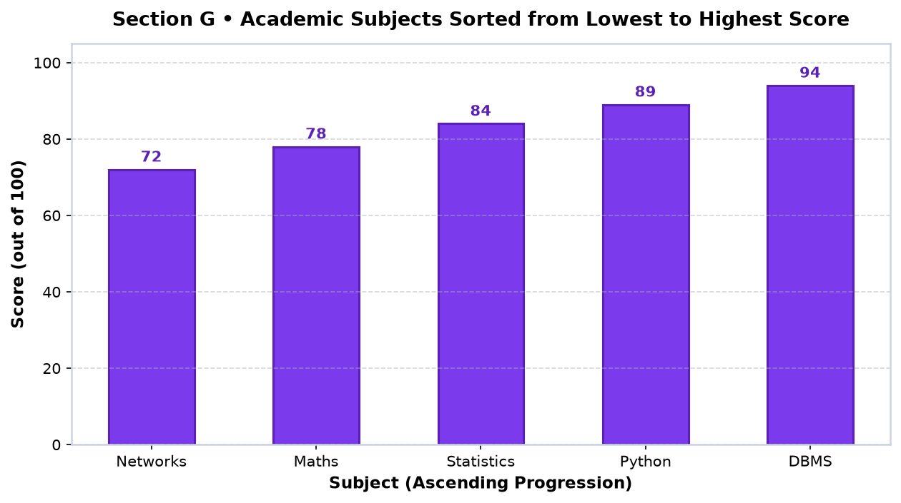
Jab data mein profit aur loss, growth aur decline, ya positive aur negative scores hote hain, tab bars Zero Baseline (ax.axhline(0)) se dono directions (upward aur downward) mein extend hoti hain.
import matplotlib.pyplot as plt months = ['Jan', 'Feb', 'Mar', 'Apr', 'May', 'Jun'] profit_loss = [45, -20, 60, -35, 75, 90] # Thousand Rs. # List comprehension for conditional colors colors = ['#059669' if v >= 0 else '#dc2626' for v in profit_loss] fig, ax = plt.subplots(figsize=(8.5, 4.8), dpi=150) bars = ax.bar(months, profit_loss, color=colors, width=0.55, edgecolor='#0f172a', linewidth=1.2) ax.axhline(0, color='#0f172a', linewidth=1.8) # Explicit Zero Baseline ax.set_title('Monthly Business Operating Profit & Loss (+/-)', fontsize=13, fontweight='bold') ax.set_ylabel('Profit / Loss (Thousand Rs.)', fontsize=11, fontweight='bold') ax.set_ylim(-50, 110) ax.grid(axis='y', linestyle='--', alpha=0.5) fig.tight_layout() plt.show()
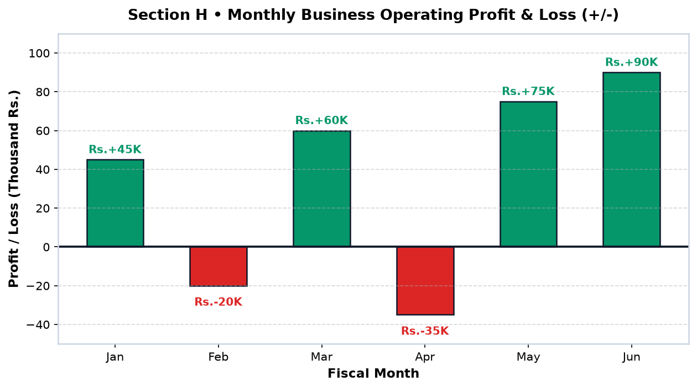
Test 1 se Test 2 mein student ke marks mein kitne points ka gain ya drop hua:
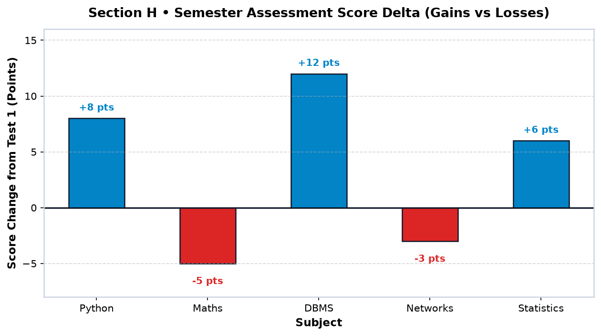
Jab humein do ya zyada groups ko same categories par side-by-side compare karna ho (e.g. Student A vs Student B ya Actual vs Target), tab Grouped Bar Charts use hote hain. Isme hum NumPy array offsets (x - width/2 aur x + width/2) calculate karte hain.
import matplotlib.pyplot as plt import numpy as np subjects = ['Python', 'Maths', 'DBMS', 'Networks', 'Statistics'] student_a = [88, 76, 92, 81, 85] student_b = [82, 85, 88, 74, 90] x = np.arange(len(subjects)) width = 0.35 fig, ax = plt.subplots(figsize=(9.5, 5), dpi=150) bars1 = ax.bar(x - width/2, student_a, width, label='Aarav (Student A)', color='#0284c7', edgecolor='#0369a1') bars2 = ax.bar(x + width/2, student_b, width, label='Priya (Student B)', color='#7c3aed', edgecolor='#5b21b6') ax.set_title('Grouped Bar Chart: Academic Performance Benchmark', fontsize=13, fontweight='bold') ax.set_xticks(x) ax.set_xticklabels(subjects, fontweight='bold') ax.set_ylabel('Marks (out of 100)', fontsize=11, fontweight='bold') ax.set_ylim(0, 110) ax.grid(axis='y', linestyle='--', alpha=0.5) ax.legend(loc='upper right') ax.bar_label(bars1, fmt='%d', padding=2, fontsize=8.5, fontweight='bold') ax.bar_label(bars2, fmt='%d', padding=2, fontsize=8.5, fontweight='bold') fig.tight_layout() plt.show()
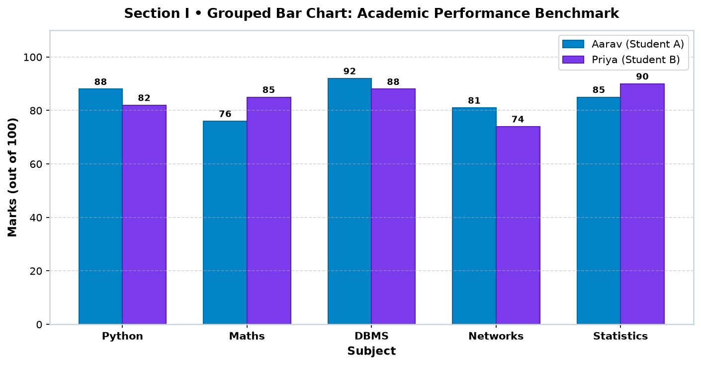
Corporate quarterly sales benchmark comparing monthly actual revenue against milestones:
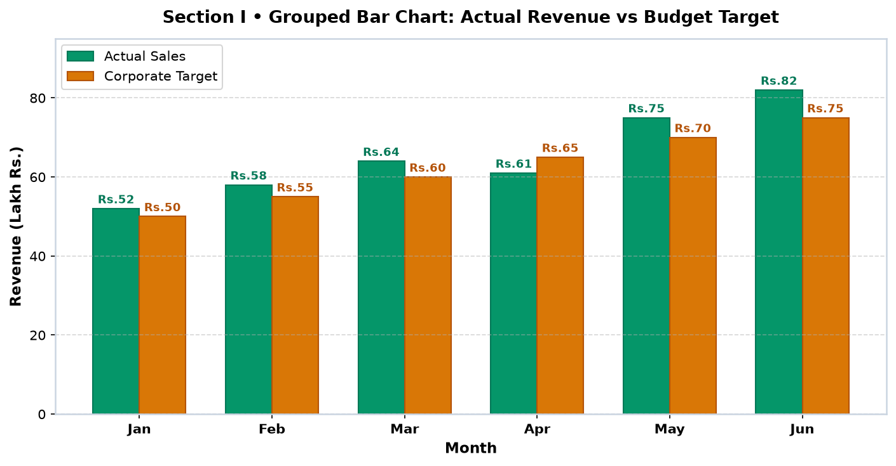
Stacked bars show karte hain ki alag-alag subcategories milkar total kaise banati hain. Isme hum bottom parameter use karte hain vertical bars ke liye aur left parameter use karte hain horizontal bars ke liye.
series1 hota hai. Teesri series ka bottom = series1 + series2 hota hai!
Har month student ke total kharche mein har category ka contribution visualize karna:
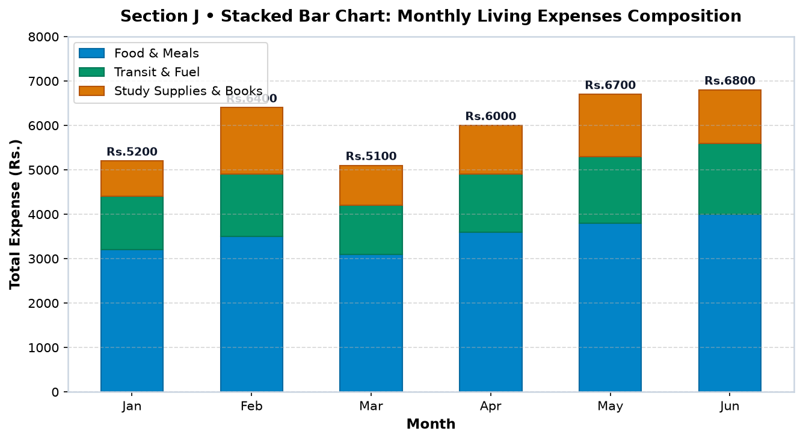
Online store ke quarterly total orders mein fulfillment status breakdown:
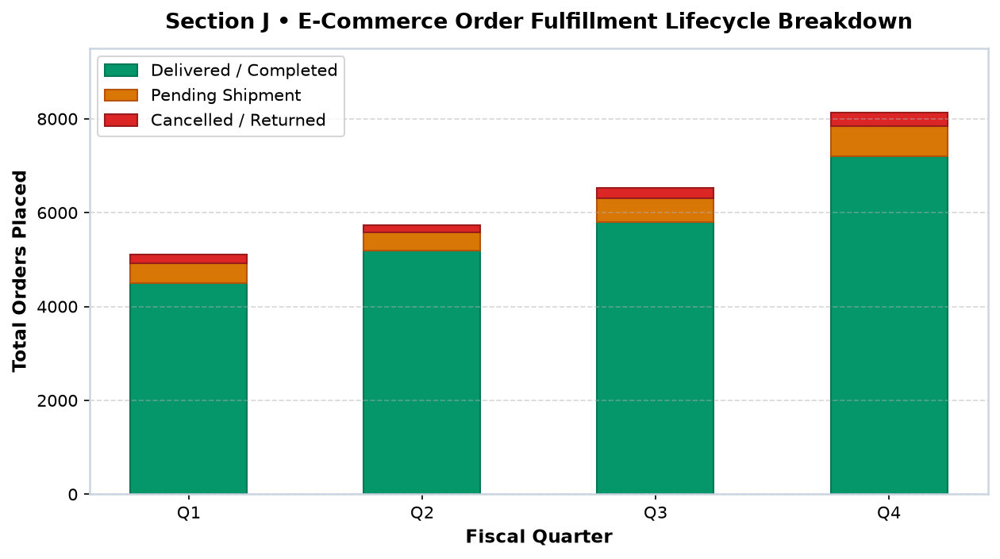
Bar charts ki readability ko clean rakhne ke 4 essential rules:
ax.grid(axis='y')); Horizontal bars par sirf X-grid lagao (ax.grid(axis='x')). Dono grids on karne se bar visuals clutter ho jate hain!ax.axhline() ya ax.axvline() use karo (jaise 75% attendance cutoff).Departmental attendance with 75% mandatory threshold baseline:
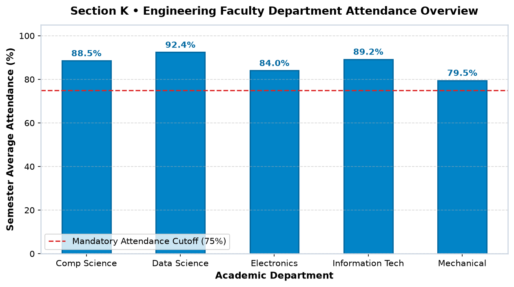
Complex industry names formatted cleanly on horizontal axes:
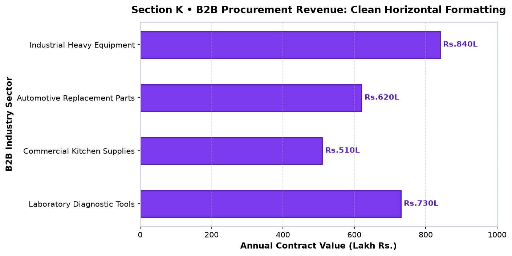
Data visualization ka sabse bada ethical rule hai: Bar charts must always start at ZERO!
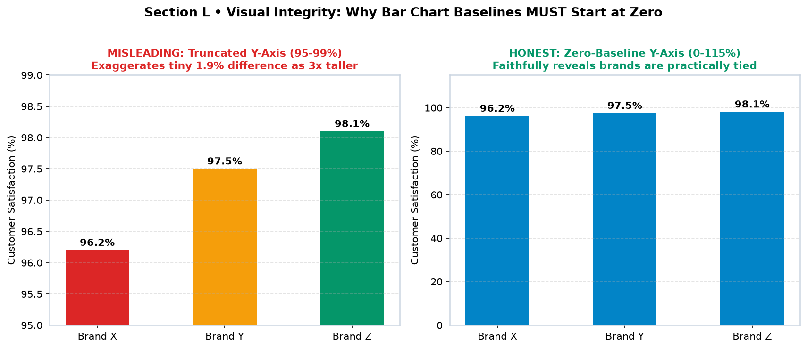
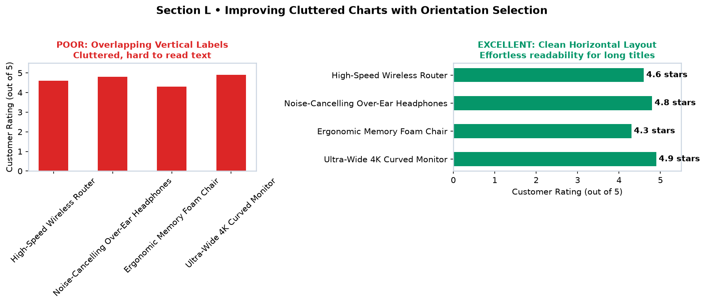
Ek complete 3-panel student academic executive board create karte hain:
import matplotlib.pyplot as plt subjects = ['Python', 'Maths', 'DBMS', 'Networks', 'Statistics'] marks = [88, 76, 92, 81, 85] attendance = [94, 88, 96, 82, 90] study_hours = [28, 20, 32, 22, 25] fig, (ax1, ax2, ax3) = plt.subplots(1, 3, figsize=(13.5, 4.8), dpi=150) # Panel 1: Marks b1 = ax1.bar(subjects, marks, color='#0284c7', width=0.5, edgecolor='#0369a1') ax1.set_title('Panel A: Subject Scores', fontsize=11, fontweight='bold') ax1.set_ylabel('Marks (out of 100)') ax1.set_ylim(0, 105) ax1.tick_params(axis='x', rotation=30) ax1.grid(axis='y', linestyle='--', alpha=0.4) ax1.bar_label(b1, fmt='%d', padding=2, fontweight='bold') # Panel 2: Attendance b2 = ax2.bar(subjects, attendance, color='#059669', width=0.5, edgecolor='#047857') ax2.axhline(75, color='#dc2626', linestyle='--', label='Cutoff 75%') ax2.set_title('Panel B: Attendance Rate', fontsize=11, fontweight='bold') ax2.set_ylabel('Percentage (%)') ax2.set_ylim(0, 105) ax2.tick_params(axis='x', rotation=30) ax2.grid(axis='y', linestyle='--', alpha=0.4) ax2.bar_label(b2, fmt='%d%%', padding=2, fontweight='bold') ax2.legend(loc='lower right', fontsize=8.5) # Panel 3: Study Hours (Horizontal) b3 = ax3.barh(subjects, study_hours, color='#7c3aed', height=0.5, edgecolor='#5b21b6') ax3.invert_yaxis() ax3.set_title('Panel C: Study Hours Invested', fontsize=11, fontweight='bold') ax3.set_xlabel('Hours') ax3.set_xlim(0, 38) ax3.grid(axis='x', linestyle='--', alpha=0.4) ax3.bar_label(b3, fmt='%dh', padding=3, fontweight='bold') fig.suptitle('Mini Project 1: College Academic Performance & Attendance Executive Dashboard', fontsize=13.5, fontweight='bold', y=1.02) fig.tight_layout() plt.show()
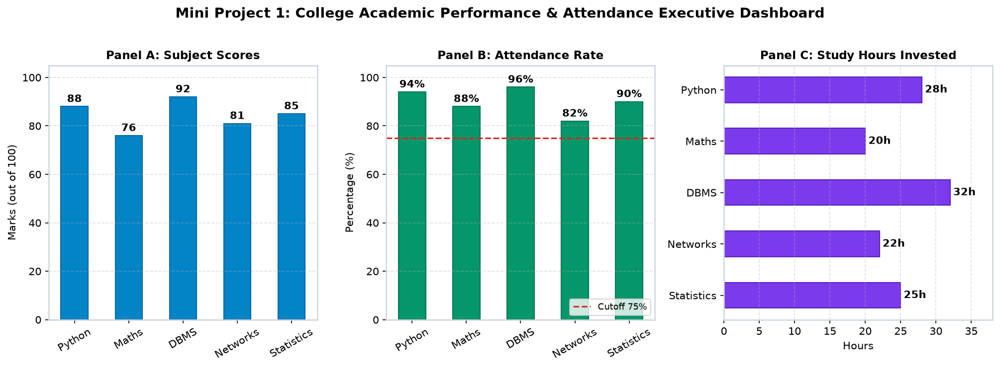
Real-world online store ke liye multi-group dashboard banate hain:
import matplotlib.pyplot as plt import numpy as np categories = ['Mobile Devices', 'Laptops & PCs', 'Audio Gear', 'Home Entertainment', 'Smart Wearables'] actual = [84, 95, 62, 54, 48] target = [80, 90, 65, 50, 42] quarters = ['Q1', 'Q2', 'Q3', 'Q4'] delivered = [1200, 1450, 1600, 2100] returns = [85, 110, 95, 140] fig, (ax1, ax2) = plt.subplots(1, 2, figsize=(12.5, 5), dpi=150) # Panel 1: Grouped Horizontal Bars y = np.arange(len(categories)) h = 0.35 b1 = ax1.barh(y - h/2, actual, h, label='Actual Revenue', color='#059669', edgecolor='#047857') b2 = ax1.barh(y + h/2, target, h, label='Sales Target', color='#d97706', edgecolor='#b45309') ax1.set_yticks(y) ax1.set_yticklabels(categories, fontweight='bold') ax1.invert_yaxis() ax1.set_title('Panel 1: Category Revenue vs Target (Lakh Rs.)', fontsize=11.5, fontweight='bold') ax1.set_xlabel('Revenue (Lakh Rs.)') ax1.set_xlim(0, 115) ax1.grid(axis='x', linestyle='--', alpha=0.4) ax1.legend(loc='lower right') ax1.bar_label(b1, fmt='Rs.%dL', padding=2, fontsize=8) ax1.bar_label(b2, fmt='Rs.%dL', padding=2, fontsize=8) # Panel 2: Stacked Bars ax2.bar(quarters, delivered, width=0.45, label='Delivered Successfully', color='#0284c7', edgecolor='#0369a1') ax2.bar(quarters, returns, width=0.45, bottom=delivered, label='Customer Returns', color='#dc2626', edgecolor='#991b1b') ax2.set_title('Panel 2: Quarterly Delivery vs Return Ratio', fontsize=11.5, fontweight='bold') ax2.set_xlabel('Quarter') ax2.set_ylabel('Total Packages') ax2.set_ylim(0, 2500) ax2.grid(axis='y', linestyle='--', alpha=0.4) ax2.legend(loc='upper left') fig.suptitle('Mini Project 2: E-Commerce Store Omni-Channel Performance Command Center', fontsize=13.5, fontweight='bold', y=0.98) fig.tight_layout(rect=[0, 0, 1, 0.95]) plt.show()
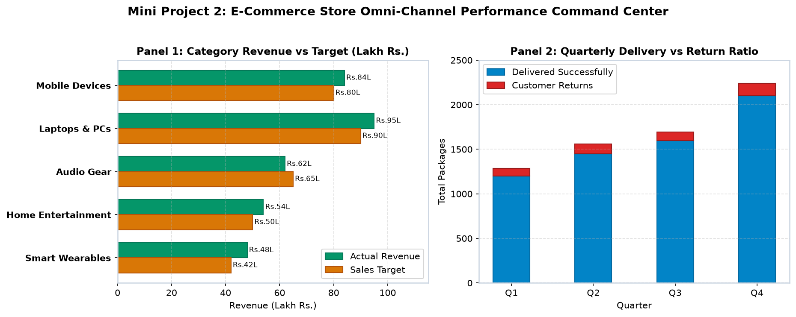
import matplotlib.pyplot as plt import numpy as np branches = ['Branch South', 'Branch Central', 'Branch North', 'Branch West'] new_signups = [340, 480, 290, 410] renewals = [280, 410, 250, 320] x = np.arange(len(branches)) w = 0.35 fig, ax = plt.subplots(figsize=(9, 4.8), dpi=150) b1 = ax.bar(x - w/2, new_signups, w, label='New Membership Signups', color='#0284c7', edgecolor='#0369a1') b2 = ax.bar(x + w/2, renewals, w, label='Annual Renewals', color='#059669', edgecolor='#047857') ax.set_title('Mini Challenge Solution: Fitness Club Member Acquisition vs Retention', fontsize=13, fontweight='bold') ax.set_xlabel('Club Location', fontsize=11, fontweight='bold') ax.set_ylabel('Active Member Count', fontsize=11, fontweight='bold') ax.set_xticks(x) ax.set_xticklabels(branches, fontweight='bold') ax.set_ylim(0, 580) ax.grid(axis='y', linestyle='--', alpha=0.4) ax.legend(loc='upper left') ax.bar_label(b1, fmt='%d', padding=2, fontweight='bold', color='#0369a1') ax.bar_label(b2, fmt='%d', padding=2, fontweight='bold', color='#047857') fig.tight_layout() plt.show()
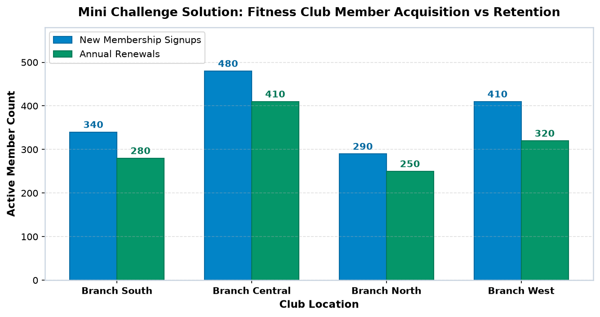
| Operation / Method | Syntax & Parameters | Key Purpose |
|---|---|---|
| Vertical Bar Chart | ax.bar(categories, values, width=0.55) | Compare discrete categories (X-axis) |
| Horizontal Bar Chart | ax.barh(categories, values, height=0.55) | Compare categories with long labels (Y-axis) |
| Invert Y-Axis | ax.invert_yaxis() | Place top-ranked item at the top of horizontal chart |
| Direct Value Labelling | ax.bar_label(container, fmt='%.1f') | Print exact values above/beside bars without loops |
| Directional Grid | ax.grid(axis='y') / ax.grid(axis='x') | Clean guidelines aligned with bar measurement scale |
| Baseline Rule | ax.set_ylim(0, max_val * 1.15) | Always anchor bars at 0 to avoid visual exaggeration |
| Grouped Offset | ax.bar(x - w/2, ...); ax.bar(x + w/2, ...) | Side-by-side comparative series |
| Stacked Decomposition | ax.bar(..., bottom=series1) | Part-to-whole contribution |
ax.bar_label() so viewers don't have to trace lines to the axis.
Agli class mein hum do numeric continuous variables ke beech relationship aur correlation explore karenge:
plt.scatter() and ax.scatter() syntax.s parameter.c and colormaps (cmap).